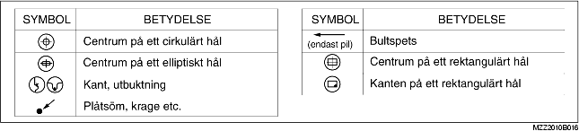

• Detta avsnitt innehåller information om vad som är nödvändigt att veta för byte av karossdelar med hänsyn till svetstyper, antal punktsvetsar samt var kapningar skall utföras.
• Svetstypen och dess placering visas med symboler.
• Vissa avsnitt har kommentarer om den åtgärd som utförs. Läs dessa kommentarer noggrant och förstå dem innan du utför några åtgärder.
Exempel
• Följande 6 symboler används för att visa vilken typ av svets som ska användas vid byte av karossdelar.
• Planmått är mått som mäts genom att projicera vissa referenspunkter till en plan yta.
• Om det inte finns några specifika angivelser är standardpunkter och mått symmetriska i förhållande till karossens mittlinje.
• De hypotetiska linjerna kan variera beroende på karossmodell.
Exempel
• Linjemått är verkliga mått mellan två standardpunkter.
• Om det inte finns några specifika angivelser är standardpunkter och mått symmetriska i förhållande till karossens mittlinje.
Exempel
• Följande 8 symboler används för att visa på standardpunkter.
